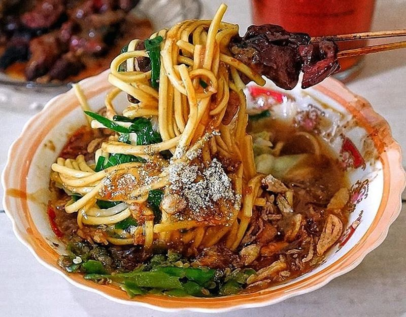
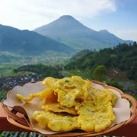
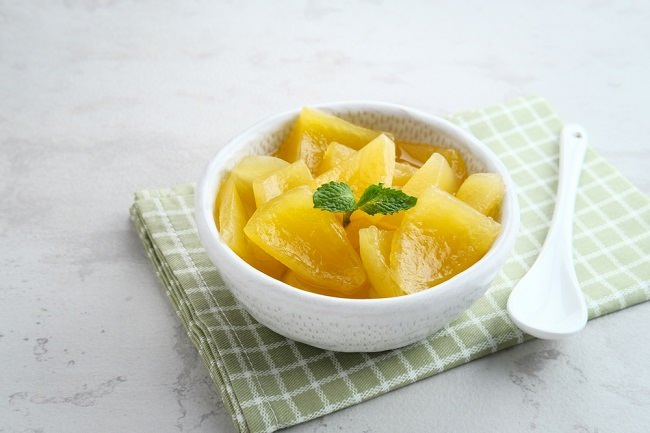
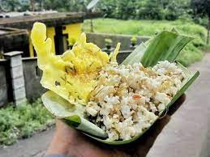

Pengen nyoba kuliner Wonosobo-an tapi ngga kesampean? skuy bikin dirumah aja!

Mie Ongklok
Mie ongklok adalah mie rebus khas kota Wonosobo dan sekitarnya. Mie rebus ini dibuat dengan menggunakan kol, potongan daun kucai, dan kuah kental berkanji yang disebut loh. Mi ini banyak dijajakan di berbagai warung, rumah makan, maupun dijajakan keliling memakai gerobak di kota tersebut. Pendampingnya biasanya adalah sate sapi, tempe kemul, serta keripik tahu.

Tempe Kemul
Tempe Kemul merupakan salah satu makanan ringan yang berasal dari Wonosobo. Makanan ini terbuat dari tempe yang digoreng dengan dibalut gandum, pati atau tepung singkong juga tepung beras dan biasanya ditambah daun kucai untuk pelengkap.Kemul dalam bahasa Jawa berarti selimut, artinya tempe kemul merupakan tempe yang digoreng dengan diselimuti tepung yang telah dibumbui..

Carica
Carica adalah makanan khas dari daerah Wonosobo, Jawa Tengah. Buah carica masih satu keluarga dengan pepaya. Tetapi carica memiliki ukuran lebih kecil. Bentuk buah seperti perpaduan antara buah kakao dan pepaya. Carica biasanya dibuat manisan khas Wonosobo. Mengutip dari buku Kuliner Dunia Christie Damayanti, carica tumbuh di dataran tinggi sekitar 1.500 sampai 3.000 meter diatas permukaan laut. Berikut penjelasan lengkap tentang carica.

Nasi Megono
Ciri khas megono Wonosobo adalah adanya tambahan irisan kubis hijau, parutan kelapa, dan ebi. Bumbu megono Wonosobo sendiri terdiri dari bawang merah, bawang putih, garam dan cabai. Parutan kelapa dan ebi tersebut yang memberikan rasa gurih.
Kuliner Wonosobo
Wonosobo tidak hanya terkenal dengan tempat wisatanya saja, namun juga dengan kulinernya yang khas.Wonosobo memiliki banyak sekali kuliner yang wajib kalian coba saat liburan disana.Namun tidak usah khawatir jika belum bisa liburan ke Wonosobo, karena sekarang kalian bisa membuat sendiri kuliner khas Wonosobo dari rumah.
Dengan website ini saya berharap banyak orang yang terbantu karena website ini memiliki banyak manfaat salah satunya untuk mempermudah pencarian resep makanan khas Wonosobo dan saya juga memberikan panduan memasak yang jelas melalui video yang bisa dilihat melalui channel YouTube